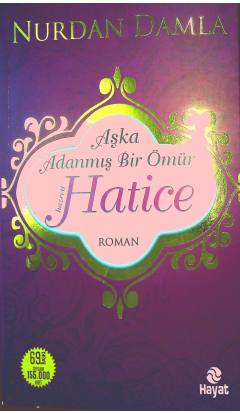

AAHz. Haticaning hayoti va islom yo'lidagi fidoyiligiga bag'ishlangan asar.
Mazkur kitob Islom tarixidagi buyuk shaxsiyatlardan biri bo'lgan Hz. Haticaning hayoti, uning imoni va fidoyiligiga bag'ishlangan. Asarda uning Payg'ambarimiz Muhammad (s.a.v.) bilan bo'lgan hayoti va Islom yo'lidagi xizmatlari badiiy tarzda hikoya qilinadi. Kitob o'quvchilarga ma'naviy ozuqa berish bilan birga tarixiy haqiqatlarni ochib beradi.